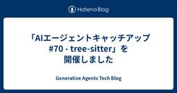

Generative Agents Tech Blog
https://blog.generative-agents.co.jp/
Generative Agents Tech Blog
フィード

「AIエージェントキャッチアップ #70 - tree-sitter」を開催しました
Generative Agents Tech Blog
ジェネラティブエージェンツの大嶋です。 「AIエージェントキャッチアップ #70 - tree-sitter」という勉強会を開催しました。 https://generative-agents.connpass.com/event/387534/generative-agents.connpass.com アーカイブ動画はこちらです。 www.youtube.com tree-sitter 今回は、AIエージェントの実装でよく使われるパーサージェネレーター「tree-sitter」をキャッチアップしました。 tree-sitterのGitHubリポジトリはこちらです。 github.com 今回…
4日前

「AIエージェントキャッチアップ #69 - Recursive Language Models (RLMs)」を開催しました
Generative Agents Tech Blog
ジェネラティブエージェンツの大嶋です。 「AIエージェントキャッチアップ #69 - Recursive Language Models (RLMs)」という勉強会を開催しました。 https://generative-agents.connpass.com/event/386420/generative-agents.connpass.com アーカイブ動画はこちらです。 www.youtube.com Recursive Language Models（RLMs） 今回は、言語モデルが入力を分解し自身を再帰的に呼び出す「Recursive Language Models（RLMs）」をキャ…
15日前
「AIエージェントキャッチアップ #68 - AI-DLC」を開催しました
Generative Agents Tech Blog
ジェネラティブエージェンツの大嶋です。 「AIエージェントキャッチアップ #68 - AI-DLC」という勉強会を開催しました。 generative-agents.connpass.com アーカイブ動画はこちらです。 www.youtube.com AI-DLC 今回は、AWSが公開したソフトウェア開発ワークフロー「AI-DLC（AI-Driven Development Life Cycle）」をキャッチアップしました。 AI-DLCのGitHubリポジトリはこちらです。 github.com AWSのブログ記事はこちらです。 aws.amazon.com 今回のポイント AI-DLCと…
25日前
「AIエージェントキャッチアップ #67 - Harbor」を開催しました
Generative Agents Tech Blog
ジェネラティブエージェンツの大嶋です。 「AIエージェントキャッチアップ #67 - Harbor」という勉強会を開催しました。 generative-agents.connpass.com アーカイブ動画はこちらです。 www.youtube.com Harbor 今回は、サンドボックス環境でエージェントを評価するためのフレームワーク「Harbor」をキャッチアップしました。 HarborのGitHubリポジトリはこちらです。 github.com 公式ドキュメントはこちらです。 harborframework.com 今回のポイント Harborとは Harborは、Terminal-Be…
1ヶ月前
【2026年2月】AIエージェントのフレームワーク、いつ使う？どれを使う？LangChain？Claude Agent SDK？
Generative Agents Tech Blog
ジェネラティブエージェンツの大嶋です。 LLMアプリケーション・AIエージェントの開発で、フレームワークを使う？使わない？という議論が盛り上がっています。 LangChain、Strands Agents、OpenAI Agents SDK、Claude Agent SDK、その他たくさんありますが、これらはいつ使うべきなのでしょうか？ また、使うならどれを使うべきなのでしょうか？ この記事に、「AIエージェントのフレームワーク、いつ使う？どれを使う？」という疑問について、2026年2月時点での私の考えをまとめます。 実装するアプリケーションの種類によって判断が異なると考えているので、アプリケ…
2ヶ月前
「AIエージェントキャッチアップ #66 - Agent Client Protocol」を開催しました
Generative Agents Tech Blog
ジェネラティブエージェンツの大嶋です。 「AIエージェントキャッチアップ #66 - Agent Client Protocol」という勉強会を開催しました。 generative-agents.connpass.com アーカイブ動画はこちらです。 www.youtube.com Agent Client Protocol 今回は、エディターとコーディングエージェントの通信を標準化する「Agent Client Protocol（ACP）」をキャッチアップしました。 Agent Client ProtocolのGitHubリポジトリはこちらです。 github.com 公式ドキュメントはこち…
2ヶ月前
「AIエージェントキャッチアップ #65 - Open Responses」を開催しました
Generative Agents Tech Blog
ジェネラティブエージェンツの大嶋です。 「AIエージェントキャッチアップ #65 - Open Responses」という勉強会を開催しました。 generative-agents.connpass.com アーカイブ動画はこちらです。 www.youtube.com Open Responses 今回は、OpenAIのResponses APIをオープンな仕様にした「Open Responses」をキャッチアップしました。 Open ResponsesのGitHubリポジトリはこちらです。 github.com 公式ドキュメントはこちらです。 www.openresponses.org Hu…
2ヶ月前
「AIエージェントキャッチアップ #64 - Universal Commerce Protocol」を開催しました
Generative Agents Tech Blog
ジェネラティブエージェンツの大嶋です。 「AIエージェントキャッチアップ #64 - Universal Commerce Protocol」という勉強会を開催しました。 generative-agents.connpass.com アーカイブ動画はこちらです。 www.youtube.com Universal Commerce Protocol（UCP） 今回は、Googleが発表したエージェンティックコマースのプロトコル「Universal Commerce Protocol（UCP）」をキャッチアップしました。 UCPのGitHubリポジトリはこちらです。 github.com 公式ド…
2ヶ月前
「AIエージェントキャッチアップ #63 - A2UI」を開催しました
Generative Agents Tech Blog
ジェネラティブエージェンツの大嶋です。 「AIエージェントキャッチアップ #63 - A2UI」という勉強会を開催しました。 generative-agents.connpass.com アーカイブ動画はこちらです。 www.youtube.com A2UI 今回は、Generative UIのためのエージェントとユーザー間のインターフェース「A2UI」をキャッチアップしました。 A2UIのGitHubリポジトリはこちらです。 github.com 公式ドキュメントはこちらです。 a2ui.org 今回のポイント A2UIとは A2UI（Agent-to-User Interface）は、AI…
2ヶ月前
2026年は既存コードベースにClaude Codeをなめらかに統合する1年になる
Generative Agents Tech Blog
吉田真吾（@yoshidashingo）です。 咋年末に発売した『実践Claude Code入門』の売れ行きが好調です。発売前から増刷も決定し、がんばって執筆した甲斐があったといったん胸を撫で下ろしてる今日この頃です。冬休みの間に写経実践していただいた人たちからもフィードバックをいただき大変光栄です。 実践Claude Code入門―現場で活用するためのAIコーディングの思考法 エンジニア選書作者:西見 公宏,吉田 真吾,大嶋 勇樹技術評論社Amazon いただいた感想・書評など kakakakakku.hatenablog.com note.com zenn.dev zenn.dev zen…
3ヶ月前
「AIエージェントキャッチアップ #62 - Mem0」を開催しました
Generative Agents Tech Blog
ジェネラティブエージェンツの大嶋です。 「AIエージェントキャッチアップ #62 - Mem0」という勉強会を開催しました。 generative-agents.connpass.com アーカイブ動画はこちらです。 youtube.com Mem0 今回は、AIアシスタント・AIエージェントのメモリーレイヤー「Mem0」をキャッチアップしました。 Mem0のGitHubリポジトリはこちらです。 github.com 公式ドキュメントはこちらです。 docs.mem0.ai 今回のポイント Mem0とは Mem0は、AIアシスタント・AIエージェントのメモリーレイヤーを提供するライブラリ・プラ…
3ヶ月前
Claude Codeで切り拓くAIエージェントの新時代
Generative Agents Tech Blog
ジェネラティブエージェンツの大嶋です。 明後日12月26日に『実践Claude Code入門―現場で活用するためのAIコーディングの思考法』が発売されます。 この記事では、書籍の概要紹介と、なぜ今Claude Codeを全力で活用するべきなのかをお伝えします。 書籍『実践Claude Code入門―現場で活用するためのAIコーディングの思考法』 Amazon：https://www.amazon.co.jp/dp/4297153548 目次 第1部 手を動かして学ぶClaude Codeの基本 第1章 Claude Codeをソフトウェアエンジニアリングと統合する 第2章 Claude Cod…
3ヶ月前
「AIエージェントキャッチアップ #61 - AG-UI」を開催しました
Generative Agents Tech Blog
ジェネラティブエージェンツの大嶋です。 「AIエージェントキャッチアップ #61 - AG-UI」という勉強会を開催しました。 generative-agents.connpass.com アーカイブ動画はこちらです。 www.youtube.com AG-UI 今回は、AIエージェントをUIに接続する方法を標準化する「AG-UI」をキャッチアップしました。 AG-UIのGitHubリポジトリはこちらです。 github.com 公式ドキュメントはこちらです。 docs.ag-ui.com 今回のポイント AG-UIとは AG-UIは、AIエージェントがユーザー向けアプリケーション（UI）に接…
3ヶ月前
「AIエージェントキャッチアップ #60 - Microsoft Agent Framework」を開催しました
Generative Agents Tech Blog
ジェネラティブエージェンツの大嶋です。 「AIエージェントキャッチアップ #60 - Microsoft Agent Framework」という勉強会を開催しました。 https://generative-agents.connpass.com/event/377601/generative-agents.connpass.com アーカイブ動画はこちらです。 www.youtube.com Microsoft Agent Framework 今回は、Semantic KernelやAutoGenからアイデアをまとめて拡張された「Microsoft Agent Framework」をキャッチア…
4ヶ月前
「AIエージェントキャッチアップ #59 - W&B Weave」を開催しました
Generative Agents Tech Blog
ジェネラティブエージェンツの大嶋です。 「AIエージェントキャッチアップ #59 - W&B Weave」という勉強会を開催しました。 generative-agents.connpass.com アーカイブ動画はこちらです。 www.youtube.com W&B Weave 今回は、LLMアプリケーションのトレースや評価の機能を持つ「W&B Weave」をキャッチアップしました。 W&B Weaveの公式ドキュメントはこちらです。 docs.wandb.ai 今回のポイント W&B Weaveとは W&B Weaveは、LLMアプリケーションのトレースや評価などの機能を持つサービスです。 …
4ヶ月前
「AIエージェントキャッチアップ #58 - Playwright Test Agents」を開催しました
Generative Agents Tech Blog
ジェネラティブエージェンツの大嶋です。 「AIエージェントキャッチアップ #58 - Playwright Test Agents」という勉強会を開催しました。 generative-agents.connpass.com アーカイブ動画はこちらです。 www.youtube.com Playwright Test Agents 今回は、Playwrightに導入されたエージェント機能「Playwright Test Agents」をキャッチアップしました。 Playwright Test Agentsの公式ドキュメントはこちらです。 playwright.dev 今回のポイント Playwr…
4ヶ月前
「AIエージェントキャッチアップ #57 - Agno 2.0」を開催しました
Generative Agents Tech Blog
ジェネラティブエージェンツの大嶋です。 「AIエージェントキャッチアップ #57 - Agno 2.0」という勉強会を開催しました。 generative-agents.connpass.com アーカイブ動画はこちらです。 www.youtube.com Agno 2.0 今回は、マルチエージェントのランタイムAgentOSも提供する「Agno 2.0」をキャッチアップしました。 AgnoのGitHubリポジトリはこちらです。 github.com 公式ドキュメントはこちらです。 docs.agno.com 今回のポイント Agnoとは AgnoはOSSのマルチエージェントフレームワークです…
4ヶ月前
「AIエージェントキャッチアップ #56 - LangWatch」を開催しました
Generative Agents Tech Blog
ジェネラティブエージェンツの大嶋です。 「AIエージェントキャッチアップ #56 - LangWatch」という勉強会を開催しました。 generative-agents.connpass.com アーカイブ動画はこちらです。 www.youtube.com LangWatch 今回は、プロンプト最適化機能も持つLLM Opsプラットフォーム「LangWatch」をキャッチアップしました。 LangWatchのGitHubリポジトリはこちらです。 github.com 公式ドキュメントはこちらです。 docs.langwatch.ai 今回のポイント LangWatchとは LangWatch…
5ヶ月前
OpenAI DevDayに参加しました
Generative Agents Tech Blog
吉田真吾（@yoshidashingo）です。 今年10月に2年ぶりにOpenAI DevDayが開催されました。わたしはGenerative Agents社の仲間とともにSan Franciscoの現地で参加してきました。 openai.com 新リリースが続々 DevDayの前にリリースされたものも含めて、キーノートでSam Altmanが新リリースを発表しました。概要をざっと以下にまとめます。 www.youtube.com 1. Apps in ChatGPT すでに競争力のあるサービス向けに、そのサービスをChatGPTのチャット内で利用可能にするApps in ChatGPTが発表…
5ヶ月前
「AIエージェントキャッチアップ #55 - Agent Lightning」を開催しました
Generative Agents Tech Blog
ジェネラティブエージェンツの大嶋です。 「AIエージェントキャッチアップ #55 - Agent Lightning」という勉強会を開催しました。 generative-agents.connpass.com アーカイブ動画はこちらです。 www.youtube.com Agent Lightning 今回は、AIエージェントを育成する「Agent Lightning」をキャッチアップしました。 Agent LightningのGitHubリポジトリはこちらです。 github.com 今回のポイント Agent Lightningとは Agent Lightningは、マイクロソフトが開発し…
5ヶ月前
「AIエージェントキャッチアップ #54 - Agentic Commerce Protocol」を開催しました
Generative Agents Tech Blog
ジェネラティブエージェンツの大嶋です。 「AIエージェントキャッチアップ #54 - Agentic Commerce Protocol」という勉強会を開催しました。 generative-agents.connpass.com アーカイブ動画はこちらです。 www.youtube.com Agentic Commerce Protocol 今回は、ChatGPTの商品購入機能で使われている「Agentic Commerce Protocol」をキャッチアップしました。 Agentic Commerce ProtocolのGitHubリポジトリはこちらです。 github.com 今回のポイン…
5ヶ月前
OpenAIのStructured OutputsをStreamingで実行してJSONをパースし続けたいときの対応方法
Generative Agents Tech Blog
OpenAIのStructured OutputsはStreamingで実行できます。 しかし、Streamingの途中では、LLMの生成したテキストは{"や{"nameなど、JSONとして不正な形式となります。 このような文字列をJSONとして扱えるように修正してパースし続けたい場合の対応方法をまとめます。 ※この記事は、OpenAIのStructured Outputsを使う場合のみが対象です。他のプロバイダのモデルやStructured Outputs以外の構造化出力方法を使う場合は、この記事の内容とは異なる対応が必要な場合があります。 client.chat.completions.s…
5ヶ月前
「AIエージェントキャッチアップ #53 - Claude Agent SDK」を開催しました
Generative Agents Tech Blog
ジェネラティブエージェンツの大嶋です。 「AIエージェントキャッチアップ #53 - Claude Agent SDK」という勉強会を開催しました。 generative-agents.connpass.com アーカイブ動画はこちらです。 www.youtube.com Claude Agent SDK 今回は、Claude Code上で強力なエージェントを構築するためのツールコレクション「Claude Agent SDK」をキャッチアップしました。 Claude Agent SDKのGitHubリポジトリはこちらです。 github.com 今回のポイント Claude Agent SDK…
5ヶ月前
「AIエージェントキャッチアップ #52 - Agent Payments Protocol（AP2）」を開催しました
Generative Agents Tech Blog
ジェネラティブエージェンツの大嶋です。 「AIエージェントキャッチアップ #52 - Agent Payments Protocol（AP2）」という勉強会を開催しました。 generative-agents.connpass.com アーカイブ動画はこちらです。 www.youtube.com Agent Payments Protocol（AP2） 今回は、エージェントエコノミーのためのオープンプロトコル「Agent Payments Protocol（AP2）」をキャッチアップしました。 AP2のGitHubリポジトリはこちらです。 github.com 今回のポイント Agent Pa…
5ヶ月前
「AIエージェントキャッチアップ #51 - opencode」を開催しました
Generative Agents Tech Blog
ジェネラティブエージェンツの大嶋です。 「AIエージェントキャッチアップ #51 - opencode」という勉強会を開催しました。 https://generative-agents.connpass.com/event/370374/generative-agents.connpass.com アーカイブ動画はこちらです。 www.youtube.com opencode 今回は、OSSのCLI型コーディングエージェント「opencode」をキャッチアップしました。 opencodeのGitHubリポジトリはこちらです。 github.com 今回のポイント opencodeとは open…
6ヶ月前
「AIエージェントキャッチアップ #50 - MCP Registry」を開催しました
Generative Agents Tech Blog
ジェネラティブエージェンツの大嶋です。 「AIエージェントキャッチアップ #50 - MCP Registry」という勉強会を開催しました。 generative-agents.connpass.com アーカイブ動画はこちらです。 www.youtube.com MCP Registry 今回は、App StoreのようにMCPサーバーを提供する仕組み「MCP Registry」をキャッチアップしました。 MCP RegistryのGitHubリポジトリはこちらです。 github.com 今回のポイント MCP Registryとは MCP RegistryのGitHubリポジトリは、以下…
6ヶ月前
「AIエージェントキャッチアップ #49 - Byterover Cipher」を開催しました
Generative Agents Tech Blog
ジェネラティブエージェンツの大嶋です。 「AIエージェントキャッチアップ #49 - Byterover Cipher」という勉強会を開催しました。 generative-agents.connpass.com アーカイブ動画はこちらです。 www.youtube.com Byterover Cipher 今回は、コーディングエージェント向けのメモリーレイヤー「Byterover Cipher」をキャッチアップしました。 CipherのGitHubリポジトリはこちらです。 github.com 公式ドキュメントはこちらです。 docs.byterover.dev 今回のポイント Byterov…
6ヶ月前
「AIエージェントキャッチアップ #48 - Vibe Kanban」を開催しました
Generative Agents Tech Blog
ジェネラティブエージェンツの大嶋です。 「AIエージェントキャッチアップ #48 - Vibe Kanban」という勉強会を開催しました。 generative-agents.connpass.com アーカイブ動画はこちらです。 www.youtube.com Vibe Kanban 今回は、コーディングエージェントへの作業依頼を効率化する「Vibe Kanban」をキャッチアップしました。 Vibe KanbanのGitHubリポジトリはこちらです。 github.com 公式ドキュメントはこちらです。 www.vibekanban.com 今回のポイント Vibe Kanbanとは Vi…
7ヶ月前
「AIエージェントキャッチアップ #47 - Deep Agents (LangChain)」を開催しました
Generative Agents Tech Blog
ジェネラティブエージェンツの大嶋です。 「AIエージェントキャッチアップ #47 - Deep Agents (LangChain)」という勉強会を開催しました。 generative-agents.connpass.com アーカイブ動画はこちらです。 www.youtube.com Deep Agents 今回は、よく使われているAIエージェントの構成を汎用化した、LangChainの「Deep Agents」をキャッチアップしました。 Deep AgentsのGitHubリポジトリはこちらです。 github.com LangChain公式ブログの記事はこちらです。 blog.langc…
7ヶ月前
「AIエージェントキャッチアップ #46 - DSPy v3」を開催しました
Generative Agents Tech Blog
ジェネラティブエージェンツの大嶋です。 「AIエージェントキャッチアップ #46 - DSPy v3」という勉強会を開催しました。 generative-agents.connpass.com アーカイブ動画はこちらです。 www.youtube.com DSPy v3 今回は、先日v3がリリースされた、プロンプト最適化の「DSPy」をキャッチアップしました。 DSPyのGitHubリポジトリはこちらです。 github.com 公式ドキュメントはこちらです。 dspy.ai 今回のポイント DSPy v3とは DSPyはDeclarative Self-improving Python（宣言…
7ヶ月前